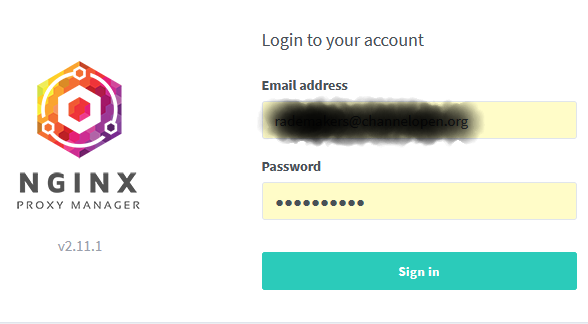
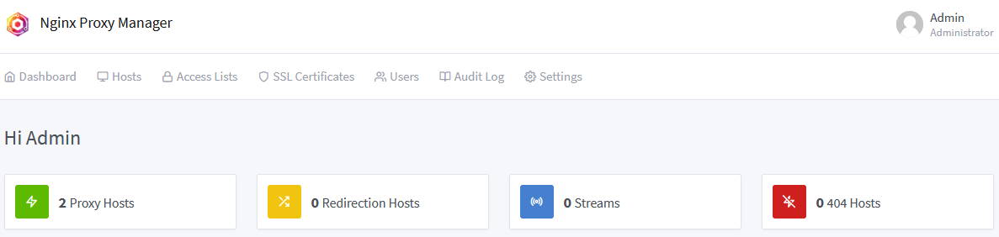
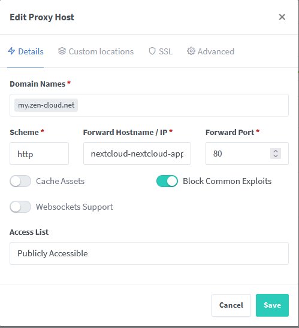
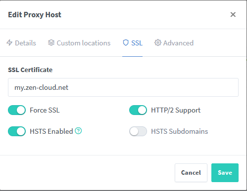
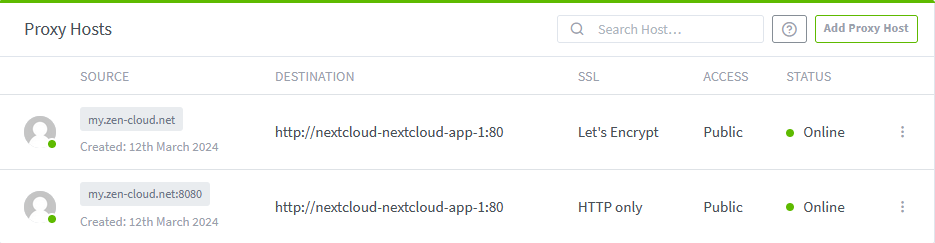
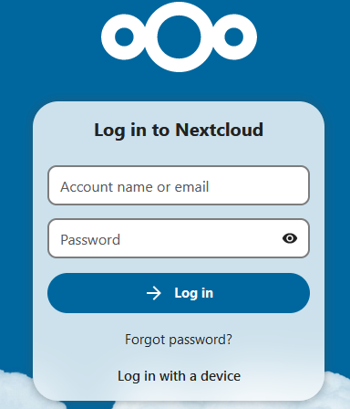

Setup
# Nextcloud
While services like Google Drive, Dropbox, and OneDrive are practical options for cloud storage, they can be limiting with their available disk space—making it challenging to host large files such as a music library. Nextcloud eliminates this limitation by enabling you to host your own cloud service that’s accessible from anywhere.
I utilize a Raspberry Pi 5 equipped with a NVMe hat and a NVMe SSD 2TB drive, thus ensuring ample disk space for my needs.
Prerequisites
- A Raspberry PI 5 (or equivalent hardware) (1)
- Docker
- Using a Raspberry Pi for this project is cost-effective, not only in terms of initial investment but also for ongoing power consumption, with only about 5W used when idle. However, if you already have a server, you can follow the same installation steps on that hardware and operating system.
Docker
Although Docker is a prerequisite, let’s briefly cover its installation, as we won’t be using the version that comes with the operating system’s packages. Instead, we’ll follow the installation guide provided on the Docker website.
Setup Docker apt repository
# Add Docker's official GPG key:
sudo apt-get update
sudo apt-get install ca-certificates curl
sudo install -m 0755 -d /etc/apt/keyrings
sudo curl -fsSL https://download.docker.com/linux/debian/gpg -o /etc/apt/keyrings/docker.asc
sudo chmod a+r /etc/apt/keyrings/docker.asc
# Add the repository to Apt sources:
echo \
"deb [arch=$(dpkg --print-architecture) signed-by=/etc/apt/keyrings/docker.asc] https://download.docker.com/linux/debian \
$(. /etc/os-release && echo "$VERSION_CODENAME") stable" | \
sudo tee /etc/apt/sources.list.d/docker.list > /dev/null
sudo apt-get update
To install the latest version
sudo apt-get install docker-ce docker-ce-cli containerd.io docker-buildx-plugin docker-compose-plugin
Test
Reverse proxy
To avoid exposing the Nextcloud instance directly and to keep ports 80 & 443 available for other services, a reverse proxy is essential. Despite being more familiar with Apache, in the spirit of learning, I chose Nginx, specifically the Nginx Proxy Manager project, which has a Docker image and offers an intuitive UI. This image is also available on Docker Hub.
Nextcloud
Nextcloud offers several installation options and provides a Docker image alongside instructions for setting it up.
docker-compose.yml
Both Nginx and Nextcloud require seperate database containers.
We'll create one docker-compose.yml file to manage all four Docker images:
volumes:
nextcloud-data:
nextcloud-db:
npm-data:
npm-ssl:
npm-db:
networks:
frontend:
# add this if the network is arleardy existing
# external: true
backend:
# external: true
services:
nextcloud-app:
image: nextcloud
restart: unless-stopped
volumes:
- nextcloud-data:/var/www/html
environment:
- MYSQL_PASSWORD=secure_password
- MYSQL_DATABASE=nextcloud
- MYSQL_USER=nextcloud
- MYSQL_HOST=nextcloud-db
networks:
- frontend
- backend
nextcloud-db:
image: mariadb
restart: unless-stopped
command: --transaction-isolation=READ-COMMITTED --binlog-format=ROW
volumes:
- nextcloud-db:/var/lib/mysql
environment:
- MYSQL_ROOT_PASSWORD=very_secure_password
- MYSQL_PASSWORD=secure_password
- MYSQL_DATABASE=nextcloud
- MYSQL_USER=nextcloud
networks:
- backend
npm-app:
image: jc21/nginx-proxy-manager:latest
restart: unless-stopped
ports:
- "80:80"
- "81:81"
- "443:443"
environment:
- DB_MYSQL_HOST=npm-db
- DB_MYSQL_PORT=3306
- DB_MYSQL_USER=npm
- DB_MYSQL_PASSWORD=another_secure_password
- DB_MYSQL_NAME=npm
volumes:
- npm-data:/data
- npm-ssl:/etc/letsencrypt
networks:
- frontend
- backend
npm-db:
image: jc21/mariadb-aria:latest
restart: unless-stopped
environment:
- MYSQL_ROOT_PASSWORD=yet_another_very_secure_password
- MYSQL_DATABASE=npm
- MYSQL_USER=npm
- MYSQL_PASSWORD=yet_another_secure_password
volumes:
- npm-db:/var/lib/mysql
networks:
- backend
This docker-compose.yml file should be located in the /opt/nextcloud directory.
Starting up
To launch the services defined in the docker-compose.yml file, use the following command:
Warning
See section "Essential details" before continuing. The config/config.php file must be updated before moving on.
NPM config
Navigate to the Nginx Proxy Manager by entering http://

Note
The default login credentials are admin@example.com for the username and changeme for the password. Upon first login, you will be prompted to change these to secure ones.
Once logged in, the dashboard will resemble the following:

To begin creating a proxy host, navigate to "Hosts" and then "Proxy Hosts" from the top menu, or click "Proxy Hosts" on the main dashboard. Initially, you will see no existing hosts until you add a new one by selecting "Add Proxy Host":

When adding the proxy host:
- Under "Domain Names," enter the FQDN to access Nextcloud, such as
nextcloud.example.com. - For "Scheme," select
httpsince network traffic will be encrypted by the reverse proxy. (1) - In "Forward Hostname / IP," input the Docker container's name.
- Set "Forward Port" to 80.
- Enable "Block Common Exploits" for added security.
- The traffic will be secure from the internet to the reverse proxy, while the connection from the reverse proxy to the Nextcloud container will be unencrypted. This is commonly acceptable within a trusted network.
Next, under the SSL tab within "Edit Proxy Host," configure the SSL certificate:

Choose "Request a new SSL Certificate" and create one with Let's Encrypt. This process uses Certbot and should be seamless.
After configuration, your "Proxy Hosts" should appear as follows:

Access Nextcloud's web interface securely over HTTPS via your FQDN. From the "Proxy Hosts" list, click the FQDN link in the "SOURCE" column to verify the connection.
You should reach Nextcloud's login page: 
Helpful docker commands
Retrieve logs from all containers:
- This will dump all the different containers' logs in your terminal. You can grep for a specific container if you wish, or pipe it to
more.
Connect to the Nextcloud container using bash:
- This will connect you to the nextcloud-app instance with a bash shell.
Note
Not all Docker containers come with a bash shell packaged in. One of the DB instances running mariadb is running in alpine and you'll have to specify sh instead of bash
To reset the Nextcloud admin password from the command line:
- If you forgot your admin password... "admin" is the account you created when you initialy connected to the Nextcloud web UI
Stopping all running containers:
- Very explicit command, but you can also append a specific container name.
Stop and remove all containers, networks and volumes:
Adding your user to the docker group:
- Add you user account to the
dockergroup. Avoids having to runsudofor (most) docker commands.
Remove Volumes:
- If you want to completely reset the date, including uploaded files and database. Be careful--this erases all Nextcloud data.
Recreate Nextcloud from scratch with freshly pulled Images:
- Once this step is done, you'll need to navigate to https://my.zen-cloud.net to init your admin account + reinstall apps on phone and desktop
Connecting to the instanaces
Connecting to the main Nextcloud-app instance:
or the Nextcloud-db:
Essential details
Configuration adjustments are necessary within the Nextcloud instance. Modify the config/config.php file to include your Fully Qualified Domain Name (FQDN) in the trusted domains array:
While editing config/config.php, also ensure these lines are present or uncommented to force the use of HTTPS:
To automate updates for Docker containers, consider using Watchtower. The following command will run Watchtower once in debug mode:
docker run --name watchtower -v /var/run/docker.sock:/var/run/docker.sock containrrr/watchtower --run-once --debug